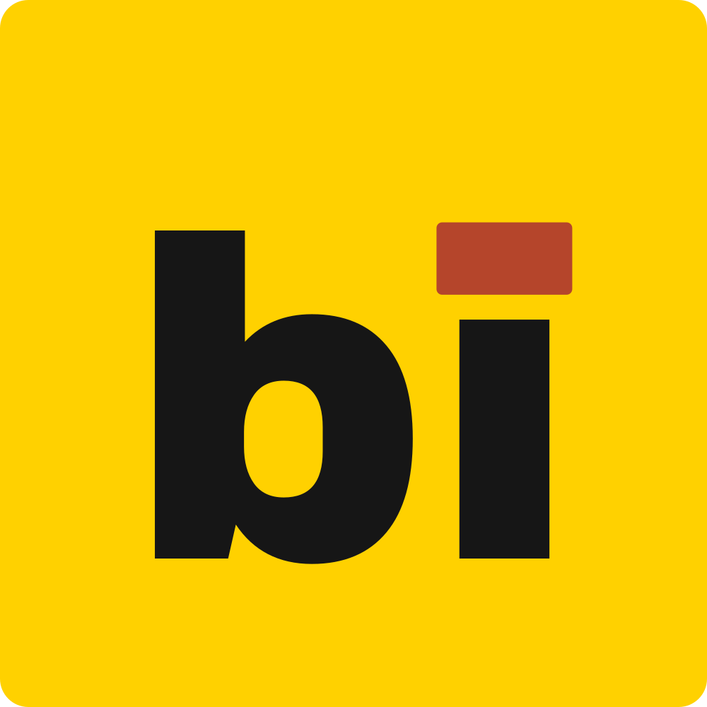
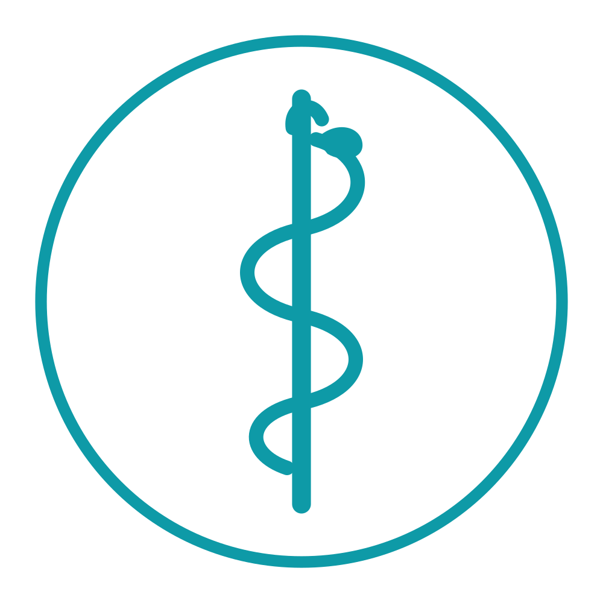

Every business in Irad has a page.
Find a café, a tailor or a pharmacy. Opening hours, prices, reviews and a pin on Kartalar. Все компании Ирада на одной карте.
7,036 business pages · 890 managed by their owners
Results
Browse by category
Cafés and restaurantsKafe jana restoran2,183ChaikhanasChaykhanalar355Groceries and marketsAzık-tülük jana bazar1,920ShopsDüköndör899ServicesKızmattar401Hotels and guesthousesMeymankana jana konok üy440Banks and exchangeBanktar141Pharmacies and clinicsDariykana jana klinikalar440Filling stationsAZS247SchoolsMektepter10
Cities
Brands and chains
 Bereke ✓Supermarket chain
Bereke ✓Supermarket chain NurGaz ✓Filling stations
NurGaz ✓Filling stations Jıldız Market ✓Supermarket chain
Jıldız Market ✓Supermarket chain Shıpa Dariykana ✓Pharmacy chain
Shıpa Dariykana ✓Pharmacy chain Ak Bata Bank ✓Bank
Ak Bata Bank ✓Bank Chuy Commercial Bank ✓Bank
Chuy Commercial Bank ✓Bank Dostyk ✓Filling stations
Dostyk ✓Filling stations Talasbank ✓Bank
Talasbank ✓Bank Signal ✓Phones and electronics
Signal ✓Phones and electronics Kepil ✓Pawnshops and exchange
Kepil ✓Pawnshops and exchange Kaimak ✓Cake shops
Kaimak ✓Cake shops Mattai ✓Grocery chain
Mattai ✓Grocery chain Steppe Luxury Group ✓Luxury retail
Steppe Luxury Group ✓Luxury retail
Baitik Kurulush ✓Building suppliesKünbala ✓Private kindergartensKIKFC Irad ✓Fast food
Eskulap ✓Private clinics Zhol Mobile ✓Mobile operator
Zhol Mobile ✓Mobile operator Talas Seyahat ✓Intercity coaches
Talas Seyahat ✓Intercity coaches